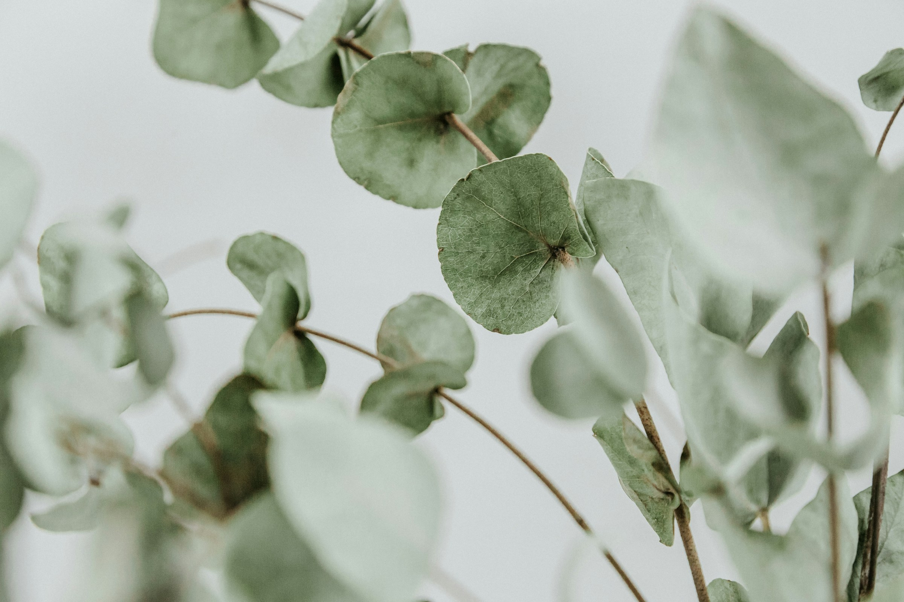
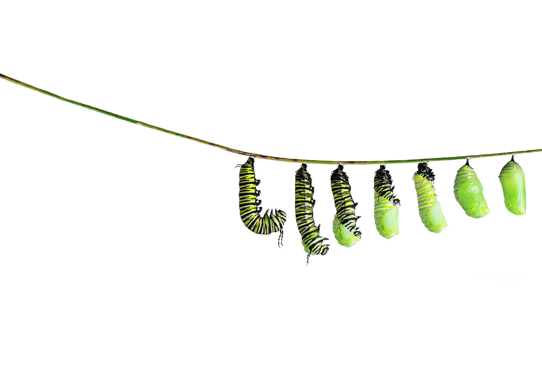
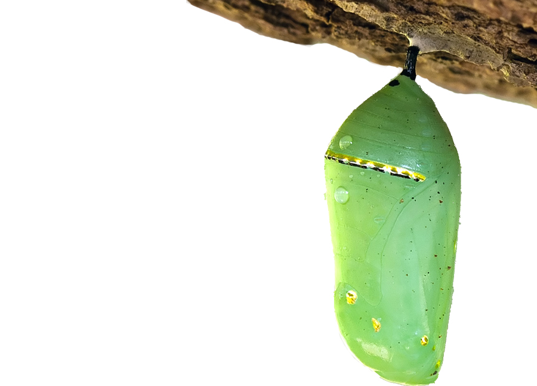

I have always had a fascination with butterflies. It all started when my 1st grade class fostered a bunch of furry caterpillars. We observed the journey as these beings crawled and wrapped themselves in a silken cocoon to rest and transform. I remember peering in the little box every day to admire the cocoons of mint green with gold edges as they hung from the ceiling of the cardboard. My heart was full with anticipation of when they would emerge.

OFFERINGS
Holistic Massage "The Monarch"
A treatment catered to your needs. Your therapist will discuss your preferred goals for treatment and provide the experience your body, nervous system and spirit crave to inspire the best version of you. Treatments will range from full body massage to medical massage of specified areas.
Prenatal Massage-"The Chrysalis"
In concert with holistic massage, your therapist will support the many changes your body makes during each phase of your pregnancy and hold space for this emotional and spiritual journey. This treatment is a full body massage performed in a side-lying position as well as face up in a semi reclined position bolstered with appropriate cushions.
Birth Prep Massage-"The Hatching"
Similar to a prenatal massage, this full body treatment is performed at 37+ weeks. It is designed to encourage and nurture natures’ course by opening the hips, releasing tension, pacifying anxiety, and stimulating specific acupressure points helpful for labor.
Postpartum Massage- "The Flying"
A full body massage performed from day 1 to year 1 after pregnancy. Designed for your birthing and pregnancy experience, your therapist will customize your session to address any concerns you may have and help nourish blood circulation, lymphatic drainage, and hormone regulation as well as enhance milk production, encourage balance and improve sleep. You may bring your baby to the session, as well as a guest. We encourage whatever you may need to feel at ease while you’re treated.
Shiatsu Massage- “The Sichuan”
A massage derived from Chinese medicine and five element theory performed with clothing on. This type of massage nourishes the flow of qi by utilizing stretches, joint mobility, compression and acupressure points. Your therapist will incorporate hands, fingers, knees, feet and palms during your treatment.


Holistic & Postpartum House calls: available upon request. Pricing determined on varying factors. Give us a call to chat
Add On
CBD Salve + Heat therapy - $25
Herbolgist formulated CBD salve applied to our greatest areas of concern followed by heat therapy.
Great for sore muscles and chronic pain & tension.

WISDOM

Massage Continuing Education
MaMassage® Prenatal Massage Therapy (24 CE) 2024
MaMassage® Prenatal Massage Therapy (24 CE) 2024
Learned how to provide safe and effective massage therapy to clients during pregnancy. Practice integrated Eastern & Western massage techniques to treat common discomforts associated with pregnancy. Examined potential complications, cautions and contraindications, as well as benefits, and helpful techniques for pregnant clients
MaMassage Prenatal Massage Training Intro & Webinar (3CE) 2023
Learned safe and effective massage therapy techniques, bolstering options, and common musculoskeletal issues and contra-indications associated with pregnancy.
MaMassage® for Labor & Postpartum Clients (8 CE) 2023
Learned in-depth knowledge needed to offer safe and effective massage treatments to laboring and postpartum clients. Reinforced knowledge of the anatomy and physiology of the body during the stages of labor and postpartum recovery. Reinforced complications and contraindications, as well as the benefits, indications, and cautions of labor and postpartum massage. Utilized massage techniques, Eastern and Western, to treat common discomforts during the stages of labor and postpartum recovery.
Advanced Shiatsu and Eastern Studies (60CE) 2023
Introduction to: fire cupping, guasha, moxibustion, Chinese nutrition, chakra balancing, polarity, tongue and pulse evaluations, Mu Point massage
The Swedish Institute College of Health Sciences, New York City 2021-2023
Massage Therapy Associate Degree
Summa Cum Laude
Comprehensive training in Anatomy, Myology, Kinesiology, Palpation, Shiatsu, Swedish Massage, Range of Motion, Sports Massage, PNF Stretching, Pathology, Assessment of musculoskeletal injury and radiculopathies, trigger point release, myofascial techniques, Thai massage, and reflexology.
CPR Certified
DoTerra Essential Oil Specialist Training 2020
Study of essential oils: history, methods of extraction and distillation, chemistry of essential oils; terpenes, phenol, aldehyde, ketone, alkane, alkene, ester, ether, oxide, and phenylpropene families. Exploration of essential oil purity, contamination and adulteration, and safety methods with using oils. Introduction of how essential oils enter the body, aromatic and topical use, dilution guidelines for both external and internal use. Practical use of oils as part of a wellness lifestyle, blends and products.
Laughing Lotus 200 Hour Yoga Teacher Training 2019
Introduction to: mantra, asana, Lotus Flow TM sequencing and class preparation, anatomy and physiology, Sanskrit, ayurveda, prenatal yoga, restorative yoga, mythology, deities and mudras Study of pranayama, subtle body, chakras and elements. Dissection and discussion of the Yoga Sutras of Patanjali, yamas and Niyamas, and creation of dharma.
50 Hour Ayurveda Training-Ali Cramer 2019
Introduction to the physical and emotional characteristics of the doshas; vata, pitta, kapha, both in balance and out of balance. Studied asana and vinyasa sequences, essential oils, and foods to nourish the doshas. Explored the tastes through cooking class to make kitchari and study of herbs and spices to pacify the doshas. Explored the vayus, gunas, rasas and kundalini yoga. Practiced ayurvedic cleansing, dinacharya, and ritucharya. Studied the connection of ayurveda and the planets including mantra, colors, gem stones, emotions, energetic direction and organ systems.
Introductory and Certified Sommelier: Court of Master Sommeliers 2016-2019
Mastery in the grapes of the wine world vinification and viticulture processes, history of wine making and laws, blind tasting methodologies, producers, geography and terroir exploration. Deep study of wine color and clarity, aroma, tasting notes, body, acidity, sugar content, alcohol content, vintage, and possible wine flaws. Finesse of wine presentation, optimal temperatures for grapes and regions, service standards, decorum, selling techniques, and revenue building for restaurant management.
University of Miami, Florida 2007 -2011
Theatre Arts, Music, Dance, Anthropology, Nutrition
Magna Cum Laude
Bachelor of Arts Degree
INSPIRATION

Finally, the day came and I thought I would burst with joy when the butterflies sprang free with all their strength from their silken homes, and they pumped their expansive wings with awe inspiring colors. It was in that moment I became enraptured with these fascinating creatures. I remember that bittersweet feeling of knowing that we then had to let them go to fly out into the world to let nature delight in their beauty.
Since then I visited many a butterfly garden and surrounded my home with butterflies-enjoying the magic of their glittering wings and perfect symmetry of design.

When brainstorming what to call my company, I thought immediately of this sweet space where we feel wrapped up in silken sheets, warm and cozy to rest and take a moment for ourselves like that of a cocoon. The beauty of the mint green cocoon with gold edges was the inspiration for my logo
Rebirth
Gardens
Inspiration
Beginning